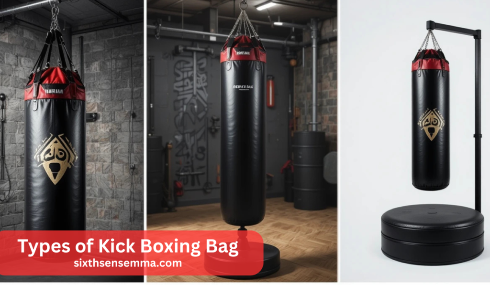
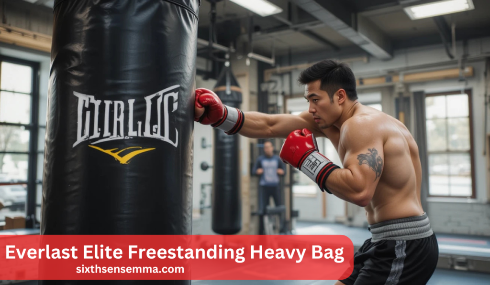
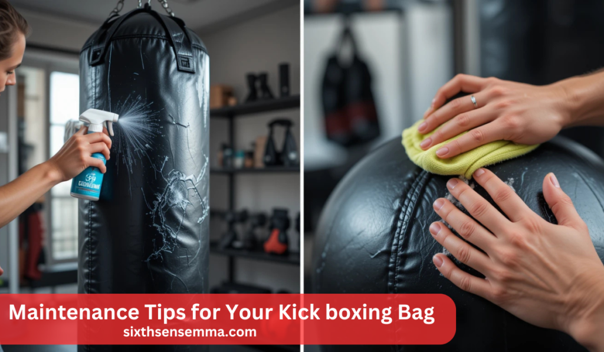

Unleash Power: Top Kick Boxing Bag Picks

A Kick Boxing Bag is an essential training tool for athletes and fitness enthusiasts looking to improve their striking skills, build endurance, and enhance overall strength. Whether for power training, speed drills, or endurance workouts, selecting the right punching bag significantly impacts training effectiveness. With various types available, including freestanding, reflex, and heavy-duty bags, users can tailor their workouts to meet specific fitness goals.
Investing in a high-quality Kick Boxing Bag ensures durability, stability, and long-term performance benefits. These bags help improve technique, develop stronger strikes, and provide an excellent stress-relief outlet. From beginners to professional fighters, choosing the right bag based on material, weight, and resistance level is crucial for maximizing training results.
Why is choosing the right Kick Boxing Bag important for training?
Selecting the right Kick Boxing Bag is crucial because it directly impacts training effectiveness, technique improvement, and endurance building. A well-suited bag provides the necessary resistance, stability, and durability, allowing athletes to refine their strikes, enhance strength, and reduce injury risk. Whether for power, speed, or endurance training, the right punching bag ensures long-term performance benefits.

Types of Kick Boxing Bag
A Kick Boxing Bag comes in different types, each designed for specific training needs such as power, speed, endurance, and reflex improvement. Understanding the different types of kick boxing bags is essential for tailoring training to specific goals. Each type offers unique benefits and is suited for various skill levels and training styles.
Heavy Bags
Heavy bags are traditional hanging punching bags that typically weigh between 70 to 100 pounds. These bags are designed to develop power, endurance, and technique by providing solid resistance to strikes. The weight and density of a heavy bag make it an excellent tool for building strength in punches and kicks while improving overall striking accuracy. This type of bag is particularly useful for martial artists and kickboxers who want to refine their combinations and generate more force behind each strike.
Freestanding Punching Bags
Freestanding punching bags are designed with a stable base, often filled with sand or water, providing both mobility and durability. Unlike hanging punching bags, these bags do not require ceiling mounts or wall brackets, making them ideal for home setups or gym spaces with installation restrictions. A freestanding punching bag is easy to reposition and adjust, allowing users to experiment with different angles and striking combinations.
Speed Bags
Speed bags are small, air-filled bags that are designed to move rapidly when struck. These bags are typically attached to a swivel mount, allowing them to rebound quickly and consistently. Training with a speed bag enhances hand-eye coordination, rhythm, and reaction time, making it a fundamental tool for striking sports such as boxing and kickboxing. The constant movement of a speed bag forces fighters to develop precise timing and striking accuracy while maintaining a steady rhythm.
Factors to Consider When Choosing a Kick Boxing Bag
Selecting the right kick boxing bag requires careful evaluation of multiple factors to ensure it aligns with training goals, durability, and available space. The right choice can enhance overall performance, prevent injuries, and contribute to an efficient workout experience.
Also read our article: Unleash Power: Top Kick Boxing Bag Picks
Material and Durability
The material of a kickboxing bag plays a critical role in its longevity and resilience against intense strikes. Bags made from genuine leather or high-quality synthetic materials like vinyl or polyurethane provide excellent durability and resistance to wear and tear. Leather punching bags are often preferred in professional training environments due to their superior feel and long-lasting construction. However, high-grade synthetic punching bags offer a cost-effective alternative while maintaining durability.
Size and Weight
Choosing the appropriate weight and size of a kick boxing bag depends on training objectives and user experience level. Heavier bags ranging from 70 to 100 pounds provide strong resistance, making them suitable for power punching and endurance training. Lighter bags, typically 40 to 60 pounds, are ideal for developing speed, agility, and combination techniques.
| Bag Type | Recommended Weight | Best For | Space Requirement |
|---|---|---|---|
| Heavy Bag | 70-100 lbs | Power training, endurance | Requires ceiling/wall mount & clearance |
| Freestanding Punching Bag | 50-80 lbs | Versatile training, mobility | Minimal space, adjustable placement |
| Speed Bag | 10-25 lbs | Hand-eye coordination, speed | Mounted on a small frame |
Stability and Base
A stable kick boxing bag ensures safe and effective training. A freestanding punching bag must have a secure base to prevent excessive movement or tipping. The choice between a water-filled punching bag and a sand-filled punching bag impacts overall stability. Sand-filled bases are denser, providing better resistance against hard strikes, while water-filled bases are easier to relocate.For users seeking long-term stability, a heavy-duty punching bag with a reinforced base ensures minimal displacement during intense training. Additionally, using a non-slip mat underneath a freestanding bag enhances grip and reduces unnecessary shifting.
Top Kick Boxing Bag Recommendations
Choosing a kick boxing bag that suits training goals is essential for improving technique, power, and endurance. Based on research, these top-rated punching bags offer durability, stability, and performance benefits for various training needs.

Everlast Elite Freestanding Heavy Bag
The Everlast Elite Freestanding Heavy Bag is designed for athletes who require a stable and impact-resistant freestanding punching bag. It features high-density foam for excellent shock absorption and a durable outer shell to withstand heavy strikes.This professional kickboxing bag is ideal for power training, offering firm resistance while maintaining stability. The rounded base allows easy maneuverability, making it suitable for both home gyms and commercial setups. With its reinforced core, the bag remains upright even during high-impact strikes, reducing the risk of tipping over.
Century Wavemaster XXL
The Century Wavemaster XXL is a heavy-duty punching bag known for its large striking surface and adjustable height, catering to various training styles. Its high-rebound foam construction ensures optimal impact absorption while providing a realistic striking experience.The self-standing bag design makes it an excellent choice for users with limited space, as it does not require mounting. Its stable base can be filled with water or sand, offering substantial resistance against strong punches and kicks. This kickboxing practice bag is widely used in martial arts training due to its durability and versatile functionality.
Ringside Elite Cobra Reflex Punching Bag
For those focused on speed training and reflex development, the Ringside Elite Cobra Reflex Punching Bag is a quick-recovery punching bag designed for agility drills. It features an adjustable height mechanism, allowing customization for different users.The rapid rebound system enhances hand-eye coordination and reaction speed, making it an excellent kickboxing speed bag. With its shock-absorbing spring and high-density foam construction, this reflex training bag improves striking precision while minimizing joint strain.
Top Kickboxing Bags
| Model | Type | Best For | Features |
|---|---|---|---|
| Everlast Elite Freestanding Heavy Bag | Freestanding | Power training, endurance | High-density foam, robust construction |
| Century Wavemaster XXL | Freestanding | Versatile training routines | Large striking surface, adjustable height |
| Ringside Elite Cobra Reflex Punching Bag | Reflex | Speed, reflex enhancement | Adjustable height, rapid rebound |
Selecting the best punching bag depends on individual preferences, available space, and training objectives. Whether focusing on power, speed, or endurance, these top-rated kickboxing bags provide an effective solution for all skill levels.
Benefits of Using a Quality Kick Boxing Bag
A kick boxing bag is more than just a piece of training equipment—it plays a crucial role in improving technique, building strength, and enhancing overall fitness. Investing in a durable punching bag ensures long-term benefits for both beginners and advanced fighters.
| Benefit | Description |
|---|---|
| Improved Technique | Enhances precision, footwork, and striking accuracy. A heavy bag helps refine form and movement efficiency, reducing injury risk. |
| Enhanced Power and Endurance | Builds strength and cardiovascular fitness. A high-density punching bag strengthens muscles and boosts stamina. |
| Stress Relief | Helps release tension and aggression. A shock-absorbing bag promotes endorphin release, reducing stress and improving mental well-being. |
Improved Technique
Training with a high-quality punching bag allows for precise strikes and controlled combinations, refining footwork and accuracy. Practicing on a heavy bag helps improve hand-eye coordination and ensures proper execution of kicks and punches. Consistently working with a kick boxing practice bag leads to better form and movement efficiency, reducing the risk of injury.
Enhanced Power and Endurance
A heavy-duty punching bag builds strength, endurance, and cardiovascular fitness. The resistance provided by a high-density punching bag strengthens muscles, particularly in the legs, arms, and core. Engaging in a kickboxing workout with a power punching bag also improves lung capacity and boosts stamina, making workouts more effective.
Stress Relief
Hitting a shock-absorbing bag serves as an excellent stress reliever, helping to release built-up tension. Engaging in a kickboxing workout stimulates the production of endorphins, which enhances mood and reduce stress levels. A kickboxing endurance bag provides an effective way to channel aggression and frustration, leading to better mental well-being.A gym-quality punching bag contributes to physical and mental health, making it a valuable addition to any training space. Whether focusing on technique, power, or stress relief, using a premium kickboxing bag ensures consistent improvement and long-term results.

Maintenance Tips for Your Kick boxing Bag
Taking care of your kickboxing bag is essential for maintaining its durability, ensuring hygiene, and prolonging its lifespan. Proper maintenance helps prevent material breakdown, unpleasant odors, and structural weaknesses that could affect your training.
Regular Cleaning
A kickboxing bag accumulates sweat, dust, and bacteria with regular use. Cleaning it frequently prevents odor buildup and keeps the surface intact. Wipe the bag down after each session with a damp cloth and a mild disinfectant. For foam punching bags or leather punching bags, a dedicated cleaner can help preserve the texture.
Proper Storage
Where you store your kickboxing training bag impacts its lifespan. Keeping it in a well-ventilated, dry space prevents mold and material deterioration. Indoor punching bags should not be exposed to excessive moisture, while outdoor punching bags should be covered when not in use to protect them from sun and rain damage. A freestanding punching bag should be placed on a flat, non-slippery surface to prevent accidental falls.
Routine Inspections
Regularly checking for damage ensures that your kickboxing bag remains in good shape. Examine the bag’s outer shell for signs of wear, such as cracks, fraying seams, or weakened stitching. For a hanging punching bag, inspect the chains and mount for any rust or weakening. If using a freestanding punching bag, check if the water-filled or sand-filled base remains stable. Addressing minor damage early prevents costly repairs or replacements in the future.
Conclusion
Choosing the right kickboxing bag is a crucial decision that directly impacts the quality of your training. The right bag helps refine technique, build strength, and enhance endurance. Whether you prefer a heavy bag for power training, a freestanding punching bag for versatility, or a speed bag for agility, selecting a model that aligns with your fitness goals is key.When deciding on a kickboxing bag, factors such as material, durability, weight, and stability should be carefully considered. A high-quality punching bag lasts longer and withstands intense workouts, while a poorly made one may wear out quickly and fail to provide the necessary resistance. Additionally, the bag’s weight and filling type whether water-filled, sand-filled, or foam-based affect how it absorbs impact and responds to strikes.
FAQ’s
The best kickboxing bag depends on training style and space. A heavy bag is great for power and endurance, while a freestanding punching bag is ideal for home use. Speed bags improve reflexes and coordination. MMA punching bags allow for versatile training. Choose based on durability and stability.
Yes, kicking a punching bag improves strength, coordination, and endurance. It helps develop lower-body power and flexibility. Regular kickboxing workouts enhance balance and speed. Kicking also engages the core and stabilizer muscles. It’s a great cardiovascular exercise for fitness.
A kickboxing bag is often referred to as a heavy bag, training bag, or freestanding punching bag. It can also be called a Muay Thai bag or MMA bag, depending on its purpose. Some prefer reflex bags for speed training. Speed bags are used for rhythm and timing.
Yes, a punching bag workout burns calories and boosts metabolism. High-intensity kickboxing training targets fat loss, including belly fat. Combining bag workouts with a healthy diet enhances results. Engaging the core during strikes helps tone abdominal muscles. Regular training supports overall fat reduction.
Yes, a punching bag improves striking technique, power, and endurance. Practicing combinations enhances muscle memory for real fights. It helps with defensive reflexes and timing. Training on a kickboxing bag builds confidence in self-defense. Proper bag work develops speed and accuracy.
The best kickboxing style depends on goals and preferences. Muay Thai is best for full-contact striking and clinch work. Dutch kickboxing focuses on powerful punches and kicks. Cardio kickboxing is great for fitness and fat loss. Traditional kickboxing blends speed and technique for competition.
Yes, daily punching bag training is fine with proper recovery. Rest is important to prevent overuse injuries. Using hand wraps and gloves protects joints. Listen to your body to avoid excessive strain. Kickboxing workouts should be balanced with strength and flexibility exercises.
Yes, kicking a punching bag strengthens the quadriceps, hamstrings, glutes, and calves. It also engages the core for stability and power. Consistent kickboxing training helps with muscle definition. Resistance kicks and weighted drills enhance growth. Proper form maximizes muscle engagement.
To kick harder, focus on technique, speed, and power. Engage the hips and core for maximum impact. Flexibility training improves kicking range. Strength training builds lower-body power. Practice repeatedly on a heavy bag to refine execution. Proper foot positioning ensures balance and force.
A 30 to 60-minute kickboxing workout can burn 500-1,000 calories. The intensity of training determines calorie burn. Combining bag workouts with strength training accelerates weight loss. Consistency is key for fat reduction. High-intensity interval training (HIIT) enhances results. Diet plays a major role in overall weight loss.
Yes, a punching bag workout engages the core muscles during every strike. Rotational movements activate the obliques. Powerful punches require abdominal stability for force generation. Kicking also strengthens the lower abs. Regular training helps define and tone abs. Proper diet enhances muscle visibility.
A 30-minute punching bag session burns 300-500 calories, depending on weight and intensity. Harder punches and kicks increase energy expenditure. High-intensity kickboxing training maximizes fat burn. Heavier bags require more effort, burning additional calories. Consistency and diet improve overall results.
Train with us in Coppell
The first class is free. Shorts, a t-shirt and a water bottle. We lend the rest.
Book a free class